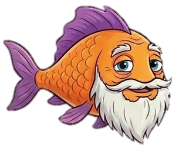
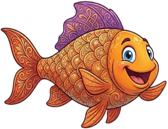
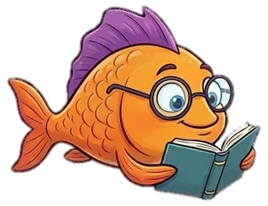
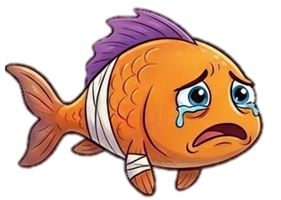

This project uses deep mapping to document the cultural and ecological significance of overlooked Indian micro waterbodies. It integrates these histories into an interactive digital visualization to promote public awareness and environmental preservation.
Creators: Aditya Kumar, Simanta Nandi, Simran Bhimjyani, Shanmugapriya T
Contact: shanmugapriya@iitism.ac.in
Department of Humanities and Social Sciences
Indian Institute of Technology (Indian School of Mines), Dhanbad